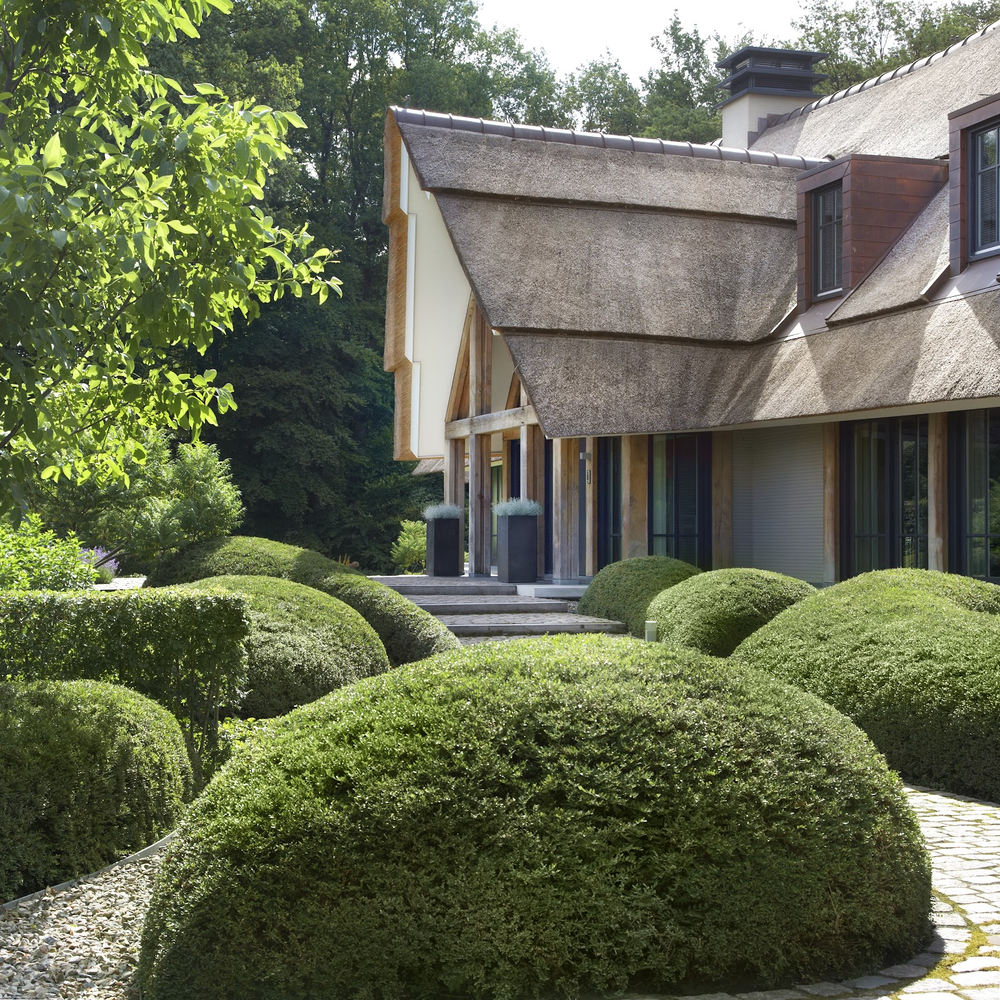

Particulier.
Je tuin bepaalt hoe je woont. Daarom kijken we naar de ligging, de stand van de zon, de materialen en welke bomen en planten bij de plek passen. En net zo goed naar onderhoud, beregening en het opvangen van regenwater. Zodat je tuin echt als thuis voelt.